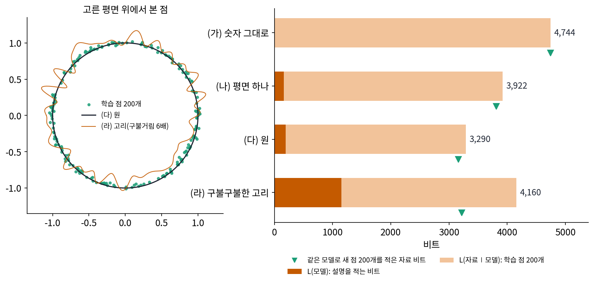

맺음: 일곱 권을 압축의 눈으로
처음부터 돌아보기
마지막 시간. 칠판에는 첫 시간에 적은 수열이 다시 적혀 있다. 2, 4, 6, 8, 10, …, 2000. 그 옆에 「2부터 2씩 천 개」라는 열 글자.

첫 시간에 이 수열을 전화로 불러 준다면 어떻게 하겠느냐고 물었죠. 그리고 「짧게 적을 수 있으면 이해한 것인가」라는 물음을 끝까지 들고 가자고 했어요. 지금은 그 물음에 뭐라고 답하겠어요?

처음에는 「짧게 적는다」가 그냥 느낌이었어요. 지금은 잴 수 있어요. 먼저 규칙이 있으면 자료가 겉보기보다 적은 방향으로만 움직였어요. 칸이 셋인데 점들이 판 하나 위에 있으면 점마다 숫자 둘이면 됐고, 다음 값을 이웃으로 맞히면 맞히고 남은 것만 적으면 됐어요.

그다음에 그 「남은 것」을 비트로 쟀어요. 끊어 읽을 수 있는 코드의 길이는 크래프트 부등식을 지켜야 해서, 길이를 정하는 일이 곧 확률을 정하는 일이었어요. 다음 글자의 확률을 내는 예측기는 산술 코딩을 붙이면 그대로 압축기가 됐고, 언어 모델의 손실도 글자 하나를 적는 비트였고요.
그런데 예측기 자신을 적는 비트를 빼먹고 있었어요. 그래서 모델을 적는 비트와 그 모델로 자료를 적는 비트를 더해서 가장 짧은 쪽을 고르자는 최소 기술 길이가 나왔어요. 학습 자료를 전부 외운 모델은 자료 비트는 0에 가까워도 모델 비트가 자료만큼 커서 이득이 없었어요.
가장 단순한 모델이 평평한 면이었어요. 자료가 고른 축으로 다시 적는 주성분 분석. 면 하나로 안 되면 축을 많이 두고 점마다 몇 개만 쓰는 희소 코딩. 똑같이 되살리지 않아도 될 때는 정해진 왜곡 안에서 몇 비트가 드는지를 레이트–디스토션으로 셌고, 무엇을 남길지 라벨이 정하면 정보 병목, 라벨이 다른 클러스터끼리 떨어지게 적는 표현은 코딩 레이트 감소로 골랐어요.

마지막 부는 신경망이었죠.
노이즈를 걷는 디노이저는 자료가 사는 곳에서 벗어난 방향만 지웠어요. 그래서 디노이저가 자료를 낮은 차원으로 끌어당기는 손실 압축기처럼 움직였고요. 그 끌어당김을 여러 번 하는 걸 층으로 펼쳐 적으면 신경망 모양이 된다는 해석이 언롤드 최적화였어요. 다만 그건 그렇게 설계한 신경망이 잘 된다는 실험이고, 이미 쓰이는 신경망이 다 그렇다는 증명은 아니었어요.

그리고 짧게 적었는데 외운 것일 수도 있었어요. 학습 자료를 다 외운 모델도 학습 자료 위에서는 오차가 가장 작으니까요. 암기와 일반화를 가르는 일, 되살린 것을 다시 압축해서 스스로 확인하는 클로즈드 루프, 그리고 압축으로 설명되지 않는 것들을 모은 압축의 한계까지 왔어요.
그 줄기를 그림 한 장에 놓아 볼까요. 3칸 공간에서 기운 판 위의 원 둘레에 점 200개를 놓고 칸마다 작은 노이즈(표준편차 0.02)을 더했어요. 이 점들을 네 가지 설명으로 적었어요. 좌표는 0.01 칸으로 반올림해 적고, 설명의 파라미터 하나는 16비트로 셌어요.


이 그림 하나에 책이 다 들어 있네요. 숫자 그대로 적으면 점 하나에 23.72비트인데, 평면을 알면 19.61비트, 원을 알면 16.45비트로 줄어요. 낮은 차원을 찾을수록 짧아져요. 평면이 주성분 분석이고 원이 매니폴드고요.
고리가 재밌어요. 학습 점의 자료 비트만 보면 고리가 3,008비트로 원의 3,098비트보다 짧아요. 그런데 고리를 적는 데 1,152비트가 들어서 합은 4,160비트로 평면보다도 길어요. 새 점에서는 고리의 자료 비트가 3,220비트로 원의 3,163비트보다 길고요. 모델까지 세어서 고른 쪽이 새 자료에도 맞았어요.

이 책의 줄기가 그거였어요. 자료를 짧게 적을 수 있다는 것은 자료에 규칙이 있다는 것이고, 모델까지 세어 가장 짧은 설명은 처음 보는 자료에도 통하는 경우가 많다. 그런데 이 줄기에 쓰인 재료가 모두 이 책에서 처음 나온 것은 아니에요. 비트로 센 엔트로피, 축, 매니폴드, 디노이저, 그리고 이 셈 바깥에서 해를 고르고 목표를 정하는 옵티마이저와 보상까지, 모두 앞의 여섯 권에서 집을 가진 개념이에요.
앞의 일곱 권을 압축의 말로 다시 읽어 볼 수 있다는 거네요.
한 줄씩 적어 보면 이래요.
| 책 | 그 책에서 본 것 | 압축의 말로 읽으면 |
|---|---|---|
| 『ML 입문자를 위한 동역학』 | 엔트로피 = 경우의 수의 로그 | 몇 번째 경우인지 적는 데 드는 비트 수 |
| 『정보기하학』 | 엔트로피 = 평균 놀라움, KL 발산 | 가장 짧은 평균 코드 길이, 잘못 믿은 코드표가 더 쓰는 비트 |
| 『스펙트럼으로 보기: 에피사이클에서 구면 조화까지』 | 대칭이 고른 축(푸리에) | 받는 쪽이 대칭만 알면 만들 수 있어 보내지 않아도 되는 축, 곧 공짜로 얻은 압축 |
| 『미분기하학의 언어들』 | 매니폴드: 어디를 확대해도 평면인 공간 | 자료가 사는 낮은 차원의 곳. 그곳을 아는 사람은 자리 몇 개만 적으면 된다 |
| 『MLP에서 디퓨전 트랜스포머까지』 | 디노이징, 디퓨전 | 자료가 사는 곳을 디노이저에 담아 두고, 생성은 노이즈에서 그곳으로 푸는 압축 풀기 |
| 『최적화: 경사하강에서 Muon 까지』 | 옵티마이저가 고르는 해 | 오차가 똑같이 0인 해가 많을 때 짧은 해를 고르는 것은 압축의 목표가 아니라 옵티마이저 |
| 『생성모델의 강화학습』 | 보상, 정책, 가치 | 세상을 잘 압축해도 정해지지 않는 「무엇을 하나」 |
여기서 「받는 쪽」은 코드를 받아 원래 자료를 되살리는 사람이에요. 표의 위 두 줄은 엔트로피 이야기로, 가운데 세 줄은 받는 쪽이 이미 아는 것 이야기로, 아래 두 줄은 압축이 정하지 않는 것 이야기로 묶어 하나씩 봅시다. 각 줄의 자세한 설명은 그 책에 있으니, 여기서는 압축의 말로 다시 읽는 데만 집중해요.